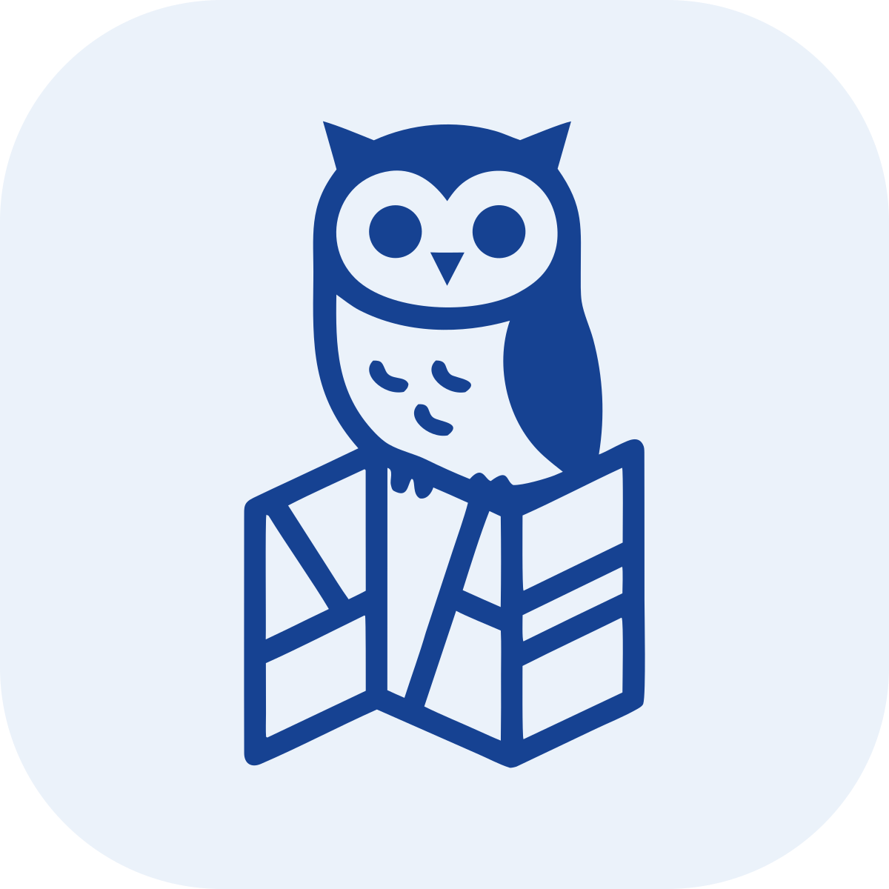
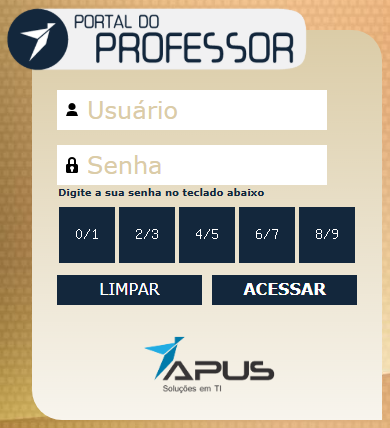
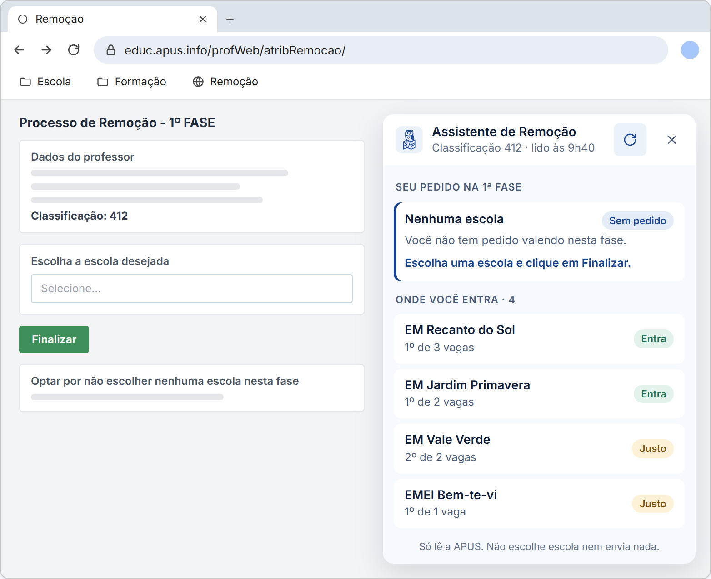
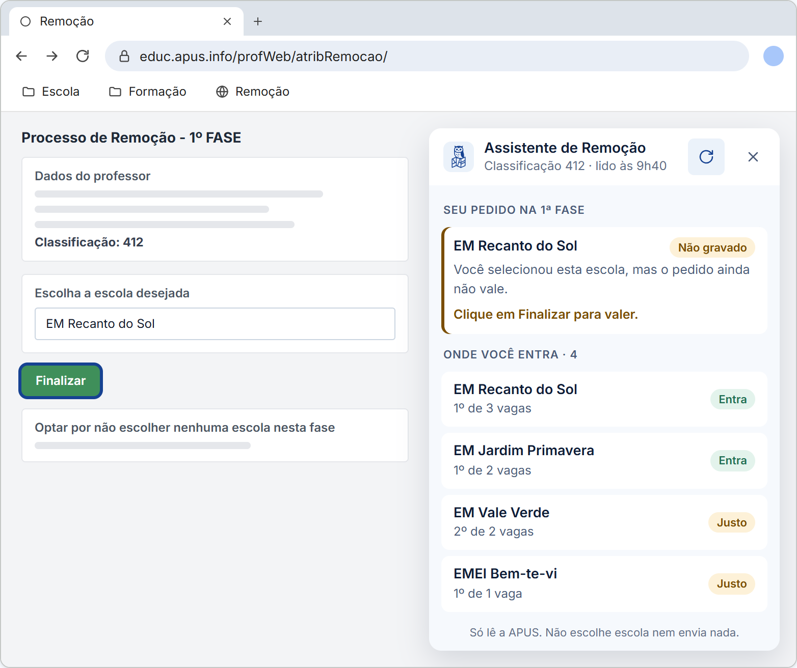
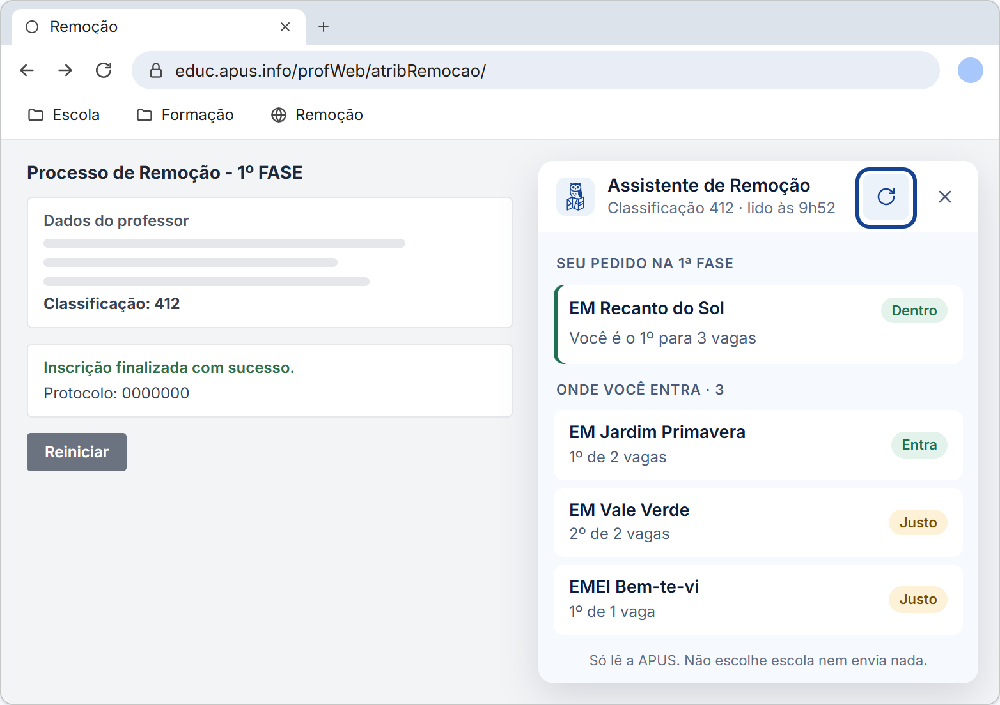
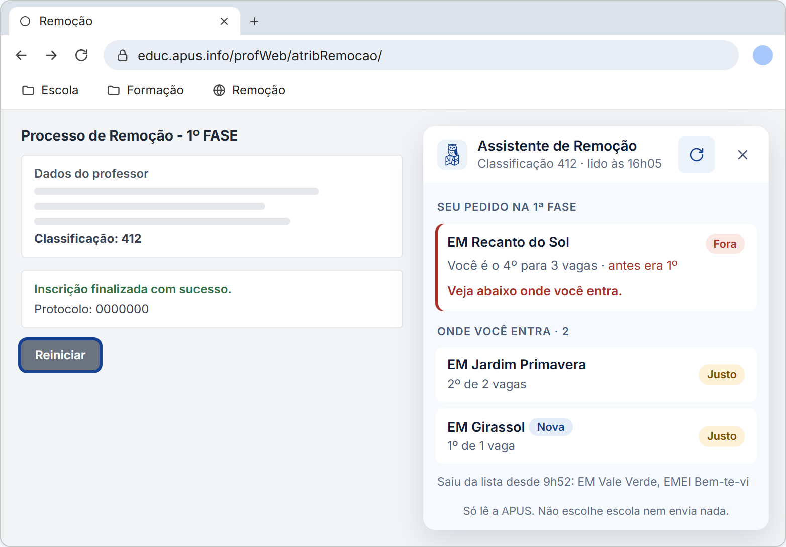
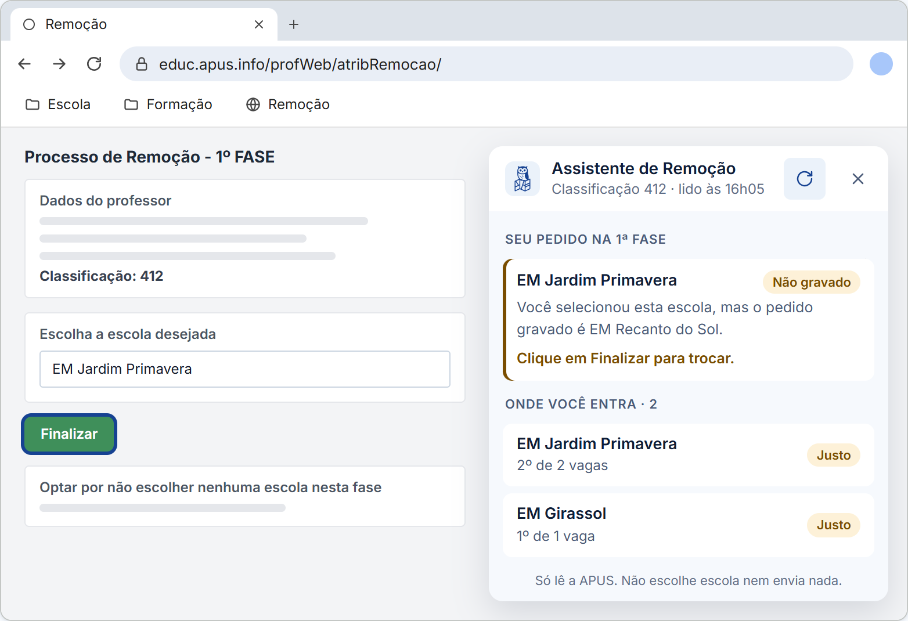

Pra Qual Escola Eu Vou?
Assistente de Remoção
Siga o passo a passo para instalar o assistente e analise suas chances de conseguir a remoção.
-
Sua barra de favoritos está aparecendo?
Ela fica logo abaixo da barra de endereço.
Se não aparecer, aperte Ctrl + Shift + B.
-
Veja como arrastar o botão para a barra de favoritos
No próximo passo, você vai segurar o botão azul Remoção com o mouse, arrastar até a barra de favoritos e soltar lá, assim:
-
Agora é a sua vez
Arraste este botão até a barra de favoritos e solte.
Não consegui arrastar
Crie o favorito à mão: aperte Ctrl + D, clique em Mais, troque o nome para Remoção e cole o texto abaixo no campo do endereço (URL).
-
Clique no favorito "🌐 Remoção" para entrar na APUS
Clique no item que acabou de adicionar à barra de favoritos: você será levado à página de login da APUS. Informe o seu usuário e a senha. Em vez de digitar a senha, aperte, na tela, os botões com os números.

-
Abra a remoção e clique no favorito de novo
Depois de entrar, abra a página da remoção e clique em Remoção na barra de favoritos. O painel abre no canto da tela e lê as escolas na hora. Leva cerca de um minuto.
Na remoção, passo a passo
Com o painel aberto, siga estes passos durante a fase.
-
Veja onde você entra
Em Escolas com possibilidade estão as escolas com vaga em que a sua classificação basta agora, com a sua posição. A chance Maior quer dizer que sobra folga. A chance Menor quer dizer que você ocupa a última vaga: se alguém mais bem classificado pedir a escola, você sai.

-
Escolha a escola na APUS e clique em Finalizar
Selecione a escola no campo Escolha a escola desejada. Só selecionar não grava o pedido: enquanto faltar o Finalizar, o painel avisa Não gravado.

-
Clique em atualizar para conferir
Depois de finalizar, clique no botão de atualizar do painel. Com o pedido gravado, ele mostra a escola, a sua posição e se você está Dentro das vagas.

-
Volte e atualize até a fase fechar
Quem tem classificação melhor pode pedir a mesma escola até o fim da fase. Volte de vez em quando e clique em atualizar: o painel compara com a leitura anterior e lista as escolas que saíram.

Ficou Fora? Para trocar de escola, clique em Reiniciar na APUS, escolha outra escola da lista e clique em Finalizar. Reiniciar sozinho não cancela o pedido: até finalizar a troca, vale o pedido antigo, e o painel avisa.

O que o assistente mostra
- Seu pedido: se ele está gravado, se ainda falta clicar em Finalizar e em que posição você está.
- Escolas com possibilidade: as escolas com vaga em que a sua classificação basta agora.
- O que mudou desde a última vez que você atualizou.
Usava a versão antiga pelo TamperMonkey? Desative-a para não ver dois painéis.